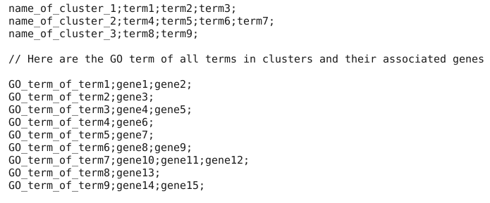
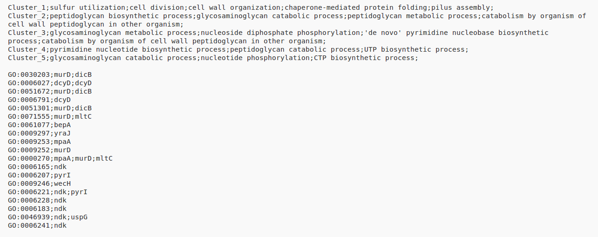

ANNOT-GENES will help you to visualize results of gene annotation via an interactive treemap. Our website simply takes as input a list of annotation clusters and a list of genes associated to each term. Then it returns a dynamic treemap. Here, we will explain the fonctions offered by our website and how to take advantage of them.
In a first time, you have to get a csv file. This file should contain clusters of terms in a specific format. Here is an example of the file structure needed :
You have to upload this csv file on the website to obtain a treemap of your clusters.
The dynamic treemap obtained represents all clusters. A cluster is represented by a big colored rectangle. Each cluster has a different color. In each cluster you can find all the terms of a certain cluster.
You have the possibility to export the resulting treemap. This export will allow you to see the treemap locally without a connection to the internet. A README is provided in the downloaded folder to help you obtain your treemap.
Nothing is better than a good example, so let's launch the resulting treemap of the example below:
